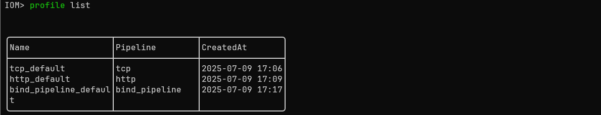
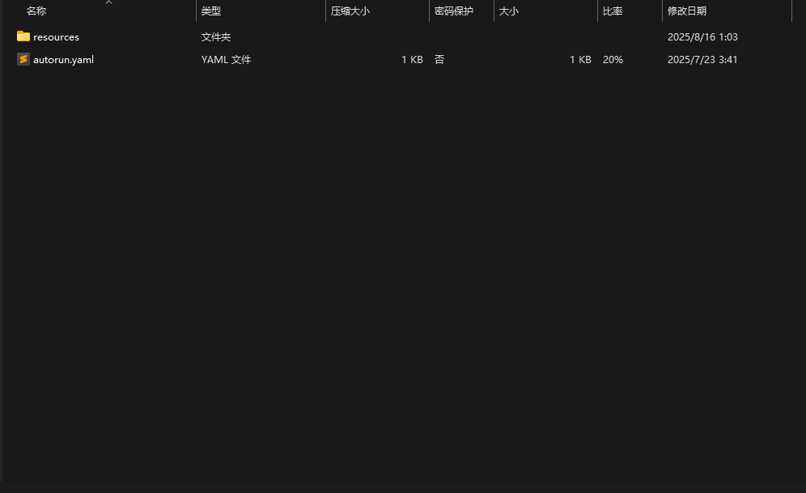

build
编译配置¶
使用SaaS编译¶
v0.1.1 加入了SaaS编译 这是IoM实现"开箱即用"目标的重要一步。SaaS编译服务托管在我们的服务器上，为用户提供最基础的自动化编译服务，极大简化了IoM的使用门槛。
- 零环境配置：无需安装Docker、GitHub Action或其他编译环境
- 自动注册：如果token为null，会自动向服务器注册获取token，对用户完全无感
- 即时可用：运行server后等待几分钟即可自动生成对应的implant
- 安全可控：如有安全顾虑，可手动关闭此功能，使用私有化编译方案
默认启用：v0.1.1版本开始，默认情况下server会使用云编译服务生成implant。
关闭SaaS编译：如需使用私有化编译方案，可在配置中关闭：
saas:
enable: false
安全警告
使用默认提供的云编译服务视为同意用户协议 用户协议全文: https://wiki.chainreactors.red/IoM/#用户协议
如有安全顾虑，建议： 1. 关闭SaaS编译功能 2. 使用Docker或GitHub Action进行私有化编译 3. 自行搭建编译环境
SaaS编译极大简化了原本复杂的编译流程，无需配置docker/githuba acticon即可进行编译。为了简化clinet编译流程，我们将原先的docker、github action编译命令与SaaS编译统一到了build命令中，通过 --source 控制使用不同的编译方式。
build beacon --profile tcp_default --target x86_64-pc-windows-gnu --source saas

如果不指定 --source 将自动寻找可用编译方式
使用github action¶
v0.0.4 开始推荐更加轻量的github action编译， 对服务器的配置无要求，也不需要安装docker
新建github token: https://github.com/settings/tokens/new

fork 或者push到自己的malefic仓库
修改 /opt/IoM/malice-network/config.yaml(即服务端config.yaml)
github:
repo: malefic
workflow: generate.yaml
owner: your_name
token: your_token
修改 config 后重启服务
service malice-network restart
或重启malice-network
./malice-network
在 v0.0.4 下，我们引入了 github action 来编译 implant，避免因为 rust 复杂的编译方案而需要准备 docker 环境来编译。现在你只需准备好 malefic 仓库和对应的 token（需要 workflow 和 package 权限），并且在 sever 或者 client 端配置（详见配置说明），即可使用命令行进行 github action 编译。
使用 client 自动编译:
编译beacon
基于github action
build beacon --profile tcp_default --target x86_64-unknown-linux-musl --source action
多按 Tab, 大部分输入都可以通过 tab 自动补全
使用docker (对服务器性能有要求)¶
如果已经配置了github action, 可以忽略docker相关。
服务器性能要求
自动化编译服务用到了 docker, 且 rust 生成的中间文件体积较大, 对 CPU 消耗较高.
因此 IoM 要搭建自动化编译的服务端对性能有一定要求.
我们推荐在至少2核4G或以上的机器运行, 并保留至少 20G 的空间.
如果只是作为 server/listener 用途, 对性能没有任何要求.
可以专门找一台服务器当做编译服务器. 后续也会提供这方面的优化.
如果要使用docker作为编译环境，需要准备一台性能还不错的机器， 并在install.sh 的交互式安装引导中选择docker.
安装脚本中已经自动化配置了IoM必备的所有环境，可以在client直接操作
若没有使用安装脚本，则需要手动安装镜像 ghcr.io/chainreactors/malefic-builder:latest ，这个镜像包含了win/linux/mac常用target。
基于docker的手动编译(非必要)
docker 手动编译操作可见: https://chainreactors.github.io/wiki/IoM/manual/implant/build/#%21-docker-%E7%BC%96%E8%AF%91%E6%8E%A8%E8%8D%90
相比IoM目前提供的参数选项， 手动编译具有更高的细粒度，但只推荐对rust开发熟悉的使用
build beacon --profile tcp_default --target x86_64-pc-windows-gnu --source docker
编译¶
目前我们精简了build命令，并支持三种编译方式，分别为docker、action和SaaS编译。本文将主要举例如何在IoM环境下进行编译。
准备profile¶
编译Implant需要通过profile来控制编译选项，所以在编译之前首先要确保是否有对应的编译profile。目前在默认的server配置下，我们会生成默认的pipeline profile，负责编译与对应pipeline通信的Implant。

在gui上，可以在artifact页面查看profile列表:
也可以点击profile的name，查看profile内容：
 如果需要建立新的profile，可以使用以下命令:
如果需要建立新的profile，可以使用以下命令:
profile new --name test --pipeline tcp
 也可以load一个已有的profile文件:
也可以load一个已有的profile文件:
profile load path/to/config.yaml --name test --pipeline tcp

在 gui 中添加 profile 时，用户若未选择文件则创建新的 profile；若选择了已有的 profile 文件，则加载该 profile:
编译beacon¶
build beacon --profile tcp_default --target x86_64-unknown-linux-musl

也可以使用 --rem ，将beacon静态链接至rem。
build beacon --profile tcp_default --target x86_64-unknown-linux-musl --rem
编译module¶
目前我们支持编译IoM的插件和第三方插件，使用时必须带上 --modules 或 --3rd ，来确认所需要编译的插件，否则将无法编译。在gui中，3rd和modules只可以在一个文本框填入module。用法如下：
build modules --modules execute_exe,execute_dll --profile tcp_default --target x86_64-pc-windows-gnu


通过artifact name加载modules（name可通过tab补全）。
load_module --artifact artifact-name
编译 3rd module¶
目前仅支持rem和curl。
build modules --3rd rem --profile tcp_default --target x86_64-pc-windows-gnu

 同上，通过artifact name加载modules。
同上，通过artifact name加载modules。

编译pulse¶
build pulse --profile tcp_default --target x86_64-pc-windows-gnu

指定beacon进行编译。
build pulse --profile tcp_default --target x86_64-pc-windows-gnu --artifact-id 5


编译prelude¶
prelude目前需要配置autorun.yaml来使用，profile中implants下的autorun需要指定为autorun.yaml：
implants:
runtime: tokio
mod: beacon
register_info: false
hot_load: true
modules:
- "full"
enable_3rd: false
3rd_modules:
autorun: "autorun.yaml" # autorun config filename
pack:
flags:
start: 0x41
end: 0x42
magic: "beautiful"
artifact_id: 0x1
autorun.yaml的示例config为：
-
name: execute_bof # 需要执行的命令名称
body: !ExecuteBinary # 指定命令proto类型
name: dir # 命令标识
bin: !File "dir.o" # 要执行的二进制文件
在编译prelude时，需要使用 --autorun 带上autorun.zip的文件路径，将autorun.zip上传至服务
器。autorun.zip的文件目录如下：

resources文件夹中需要包含autorun.yaml中所列到的所有文件。 编译命令如下：
build prelude --profile prelude-profile --target x86_64-pc-windows-gnu --autorun path/to/dir.zip

查看build log¶
如果出现编译失败，可以通过以下命令来查看build log(目前支持查看docker，后续会加上saas）：
build log artifact_name

在gui中，可以右击对应artifact行，点击Show Artifact Log, 可以查看log。

artifact¶
在artifact build 完毕后会有如下日志
现在你可以通过artifact download命令获取shellcode,
artifact download <ArtifactName> --format <format>
format格式目前有:
executable
raw
c
csharp
java
golang
python
perl
ruby
bash
powershell
hex-oneline
hex-multiline
num
dword
js_be
js_le
vbscript
vbapplication
powershell-remote *
curl-remote *
因此，你可以调用artifact download SLOW_ESTIMATE --format raw来获得一个shellcode, 直接用于执行
另外, 目前我们支持了powershell-remote和curl-remote两种新格式的用法,方便一键上线等操作,通过前文日志读者可以观察到我们将artifact及其对应的format映射到了website端: 当你调用powershell-remote时, 会输出对应的一键上线命令。
artifact download <ArtifactName> --format powershell-remote`
读者也可以通过以下命令来浏览以往的artifact记录，并且在artifact表格中选中后，即可将artifact源文件下载到client端。
artifact list

gui则是在artifact页面上点击对应的artifact行上的download按钮，即可下载artifact源文件到指定路径。